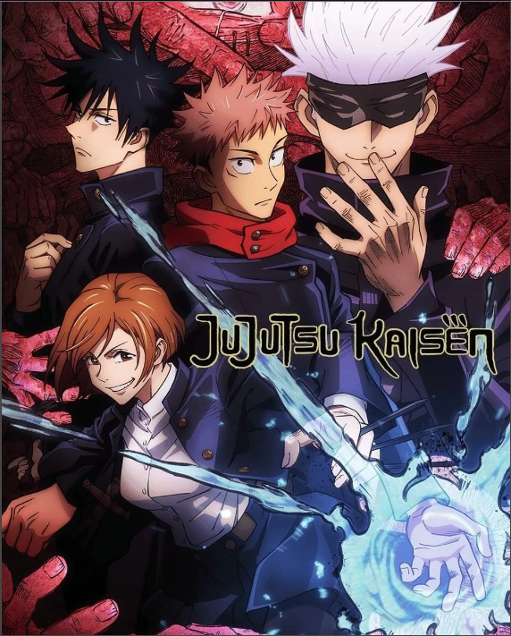
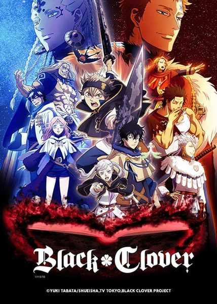

FIND YOUR ANIME
Animes recomendados

JUJUTSU KAISEN
JUJUTSU KAISEN
Certo dia, para salvar amigos que estavam sendo atacados por Maldições, Yuji Itadori engole o dedo do Ryomen-Sukuna, absorvendo sua Maldição. Ele então decide... se matricular no Colégio Técnico de Feitiçaria de Tóquio, uma organização que combate as Maldições e assim começa a heróica lenda do garoto que tornou-se uma Maldição para exorcizar uma Maldição.
Classificação: 4.9 |

Demon Slayer: Kimetsu no Yaiba
Tanjiro, um bondoso jovem que ganha a vida vendendo carvão, descobre que sua família foi massacrada por um demônio e pra piorar, Nezuko... sua irmã mais nova e única sobrevivente, também foi transformada num demônio. Arrasado com esta sombria realidade, Tanjiro decide se tornar um matador de demônios para fazer sua irmã voltar a ser humana, e para matar o demônio que matou sua família. Um triste conto sobre dois irmãos, onde os destinos dos humanos e dos demônios se entrelaçam, começa agora.
Classificação: 4.9 |

Black Clover
Black Clover
Num mundo onde magia é tudo, Asta e Yuno são abandonados em uma igreja no mesmo dia, enquanto Yuno possui poderes mágicos excepcionais... Asta é a única pessoa do mundo todo desprovida desse dom Aos quinze anos, ambos recebem grimórios - livros mágicos que amplificam os poderes do detentor. Asta recebe um raro grimório de anti-magia, capaz de negar e repelir os feitiços do oponente. Dois opostos que nutrem uma rivalidade amigável, Yuno e Asta estão prontos para encarar os mais difíceis desafios para conquistar seu sonho em comum: tornar-se o Rei dos Feiticeiros. Desistir não é opção!
Classificação: 4.8 |

TOKYO GHOUL
Um novo e emocionante episódio se desenrola em Tóquio, apenas dois anos após o ataque a Anteiku, contrariando um ressurgimento de ghouls... o CCG seleciona o jovem oficial Haise Sasaki para liderar uma equipe indisciplinada de humanos infundidos com poderes de ghouls. Conhecidos como o Esquadrão Quinx, eles cruzam a linha entre humanos e ghouls para livrar o mundo de sua ameaça mais assustadora. Mas ninguém disse que seria fácil. A caça vai começar!
Classificação: 4.5 |

DARLING in the FRANXX
A humanidade se estabeleceu em Latifúndios, cidades-fortalezas erguidas sobre os destroços da guerra, e a civilização floresceu...Nessa cidade, há o Mistilteinn, um quartel de pilotos também conhecido como Gaiola. É lá que as crianças vivem... Alheios ao mundo de fora e da vastidão dos céus. Sua única missão em vida é lutar. Seus inimigos são os urrossauros, gigantescos organismos misteriosos. As crianças operam robôs chamados FRANXX para enfrentar esses inimigos desconhecidos, crentes de que esse é seu objetivo de vida
Classificação: 4.6 |
My Hero Academia
Por toda a sua vida, Izuku sonhou ser um heroi — um objetivo ambicioso para qualquer um, mas especialmente desafiador para um garoto sem superpoderes... Isso mesmo: em um mundo onde 80% da população tem algum tipo de Dom especial, Izuku teve a má sorte de nascer completamente normal. Mas isso não vai impedi-lo de se matricular em uma das academias de herois mais prestigiosas do mundo.
Classificação: 4.7 |